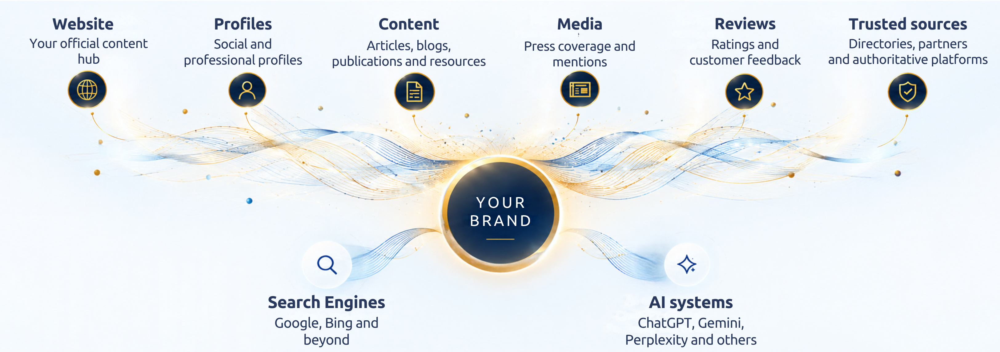

These are some of the problems clients come to Kalicube to solve.
Kalicube engineers executive and corporate digital brands differently, with an approach built for the needs of each.
Executive Digital Brand Engineering
For entrepreneurs and executives who want Kalicube’s Digital Brand Engineers to engineer how search and AI understand, represent and recommend them.
Explore Executive Digital Brand Engineering“Ultimately, you’ll end up with the cleanest possible data, which is vital for training AI models.”
Entrepreneur, Author, Digital Brand Expert
Corporate Digital Brand Engineering
Kalicube provides the Digital Brand Engineering strategy and Kalicube Pro intelligence your team needs to engineer your corporate brand for search and AI.
Explore Corporate Digital Brand EngineeringNewfold Digital, the group behind Bluehost and Yoast, runs its brands on Kalicube.
“Kalicube Pro changes the game in reputation management. Brand Reputation on Steroids.”
CEO, WordLift
Search engines and AI systems build their understanding from information across your digital ecosystem. Your website matters, but so do profiles, third-party sources, knowledge systems, media coverage, reviews and the relationships between them.

The authority behind Digital Brand Engineering
Kalicube is a Digital Brand Engineering consultancy for entrepreneurs and companies. Founded in 2015, Kalicube combines specialist expertise with proprietary digital brand intelligence to engineer how search and AI understand and represent brands.
Founded by
Jason Barnard
Jason started in SEO in 1998, the year Google was incorporated. In 2012 he saw that what people find when they search your name is what matters, and did that work for clients by hand. In 2015 he built Kalicube Pro to automate it, and he is still its sole architect. He was the first to see that search, the knowledge graph and LLMs are three different engines.
More about Jason BarnardPowered by Kalicube Pro
Kalicube Pro is Kalicube’s proprietary digital brand intelligence platform. It analyses information and relationships across the digital ecosystem to provide the intelligence behind every Digital Brand Engineering strategy.
Try Kalicube ProIndustry leaders and practitioners trust Kalicube to inform, support and advance their work in search and AI.
“From Google’s side, [Knowledge Panels] are just algorithmic. I honestly don’t know anyone else externally who has as much insight.”
“Kalicube Pro changes the game in reputation management. Brand Reputation on Steroids.”
“Kalicube Pro is unique and visionary.”
Get a personalised view of the gaps in your digital brand and what to address first.
The audit and strategy apply The Kalicube Process to your brand, and show you what to address first.